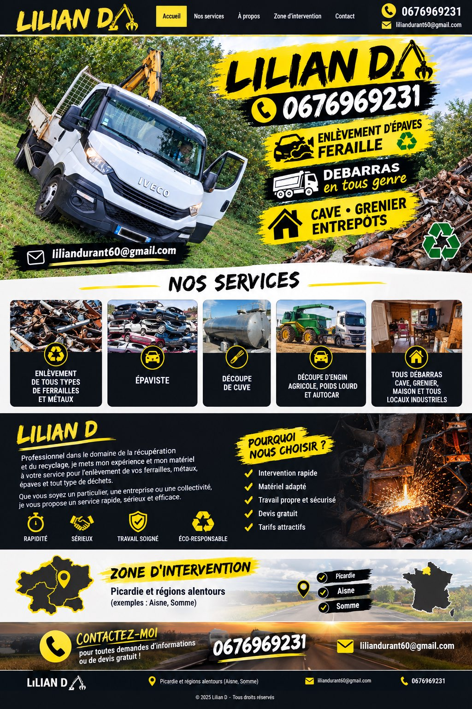

Ferraille • Épaviste • Débarras
Picardie et régions voisines

Professionnel de l'enlèvement de ferrailles, métaux et épaves. Nous intervenons auprès des particuliers et des professionnels pour vos travaux de récupération, découpe et débarras.
📍 Intervention en Picardie et dans les régions environnantes, notamment dans l'Aisne et la Somme.
Pour un renseignement, un devis ou une demande d'intervention, contactez-nous directement.
📞 06 76 96 92 31 ✉️ liliandurant60@gmail.com